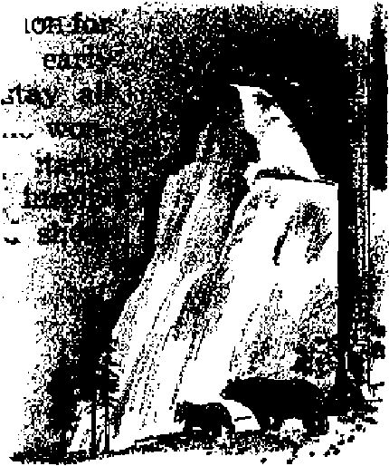
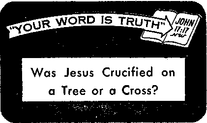

PREPARING NOW TO LIVE FOREVER
How everlasting life is actually possible
Religion Dooms the United Nations
Why failure faces the peace organization
Planting by the Moon
Is the^old superstition founded in fact?
Was Jesus Crucified on a Tree or a Cross?
News sources that are able to keep you awake to the vital issues of our times must be unfettered by censorship and selfish interests. “Awake 1” has no fetters. It recognizes facts, faces facts, is free to publish facts. It is not bound by political ambitions or obligations; it is unhampered by advertisers whose toes must not be trodden on; it is unprejudiced by traditional creeds. This journal keeps itself free that it may speak freely to you. But it does not abuse its freedom. It maintains integrity io truth.
“Awake I” uses the regular news channels, but is not dependent on them. Its own correspondents are on all continents, in scores of nations. From the four corners of the earth their uncensored, on-the'scenes reports come to you through these Columns. This journal’s , viewpoint is not narrow, but is international. It is read in many nations, in many languages, by persons of all ages. Through its pages many fields of knowledge pass in review—government, commerce, religion, history, geography, science, social conditions, natural wonders—why, its cover-age is as broad as the earth and as high as the heavens.
“Awake!” pledges itself to righteous principles, to exposing hidden foes and subtle dangers, to championing freedom for all, to comforting mourners and strengthening those disheartened by the failures of a delinquent world, reflecting sure hope for the establishment of a righteous New World.
Get acquainted with “Awake!” Keep awake by reading “Awake!”
PCTBMSWED SEMIMONTHLY Bl
WATCHTOWER BIBLE AND TRACT SOCIETY* INC,
117 Adam* Street Brooklyn 1, N. Y., U. S, A,
N, H, Knosr, President Gbant Suiter, tfecreiary
Printing this issue: 1,250,000
Five cents a copy
Riailtt&RMi should be sent Io offlra In your country In compliance with regulations to guarantee safe delivery of money. Remittances are accepted al Brooklyn from countries where no office la' located, by International money order wily. Subscription rates in different countries are here stated in local currency. Motta of expiration (with renewal blank I Ie sent at least two issues before subscription expiree. Changs of addrm whan sent to ov office may be expected effective wltb|i one month, fiend your old as well as new address.
Ad of March 3, 1879. Printed in U. S. A.
Language in whi«h tlfa ittiulRt h piblitfaed: semimonthly—Afrikaans, English, Finnish, Freueh. German, Hollandfsh, Nnrwtcian. Spanish, Swedish. Slorithly—Danish, Greek, I’ortuinieisi?, rkramian.
Offices Yearly subscription Rate
America. U.S., LIT Adams St , Brooklyn 1, N.Y $1 AutralFi, 11 Beresford Rd, Rtrithfield, N.fi.W, Us Canada, 40 Irwin Are,, Toronto 5, Ontario $1 England, 34 Craven Terrace, London, W. 2 7*
Sort* Africa, Private Bag, P.O, Elandsfontefn,
Transvaal 7a
Entered as serond-class mailer at Brn-oklyn, N. Y.
» W*
CONTENTS
The Azores—Atlantic Steppingstones
Religion Dooms the United Nations
Vacation Wonderlands of the United States 13
The Grand Canyon and Yellowstone
Sierra Leone—the Lion Mountains
Finding “Sheep” Along Newfoundland's Rugged Coast
“Yodr Word Is Truth”
Was Jesus Crucified on a Tree or a Cross?
Jehovah’s Witnesses Preach in
All the Earth—The British West Indies 27
"You May Live Forvvar." Thia c<a»m made in a spectacular article that was apparently tUaifnad lo catch attention and tell magarino*. But it does show cnan't desire for life. Would you like to know what God’s Word says about the possibility of life ? Than read the feature article here presented.
WrOL'LD you like to live forever? Do not be surprised at the prospect, because there are literally hundreds of thousands of people today that are preparing to do that very thing. They are preparing to live forever right here upon this planet.
Perhaps living farever in a world beset by wars and fears, famine and disease, old age and death does not present a pleasant prospect for you. But you must admit that everlasting life amid a peaceful world, free of disease, sickness and sorrow—a world where everyone would enjoy the boundless energy and carefree happiness, strength and vitality of youth—would be a most attractive prospect indeed! People today are preparing to live forever in just such a world,
From very early times mankind has diligently yet fruitlessly searched for the mystery of life. Ancient writers and philosophers, including Aristotle and Pliny, excited the imaginations of men by claiming they knew of men who had found the secret formula for a special life-giving fluid. In Aristotle’s Book of Secrets, and other writings, reference is made to various recipes telling how one could preserve his youth against the disintegration of old age.
Priests, wizards and the jugglers of demonic religious magic were the first to claim that they had special powers to unravel the mystery of life and rebraid it into a longer strand. After them came the alchemists of the Dark Ages, who searched for an imaginary “philosophers' stone," believing it was able to prolong life and restore youth. The Devil was thought by others to hold the mystery of life. Still others set out to the ends of the world, where they hoped to find some life-giving waters in golden pots at the end of the rainbow. Ponce de Leon, who explored Florida looking for the fountain of youth, was one of these. Yet none of these quests shed any light on the mystery of life.
In the nineteenth century France's foremost physiologist, Claude Bernard, declared that in a hundred years of physiological science man would be so completely the master of organic law that he would create life in competition with God. That day has net yet arrived. Scientists of this twentieth century with their electron microscopes, atom smashers and radioactive isotopes have renewed their attempt to solve the age-old mystery of life and death.
Thirty-five years ago microbes were accused of causing old age. Tests were made. Eighty-seven successive generations of fruit flies were bred and raised under totally antiseptic conditions. Results: The files
.1
died and so did the theory. Enzymes, those strange substances of organic chemistry, were next tracked down by researchers with the hope of shedding some light on the mystery of life, without success.
Probing deeper for an answer scientists closely examined the thyroid, adrenal and pituitary glands. Here lay the answer to the mystery, they thought. Again scientists were wrong. The discovery of insulin fired the imaginations of men. The Philadelphia Bulletin declared: “1,000-Year Life Span May Be Man’s Lot.” Beneath this headline the story read: “Science of the future will transform ordinary mortals into a race of super-men whose life will span ten centuries, according to Dr. Fritz Haber, eminent German chemist.” Twenty-five years later we learn that despite all “miracle drugs” life expectancy for a man of forty ‘has increased only two years—from 68 to 70—in the last century.’
But man’s desire to live is strong, instinctive and almost overwhelming, So the search goes on. William L. Laurence astonished the world with his article “You May Live Forever,” published in Look, March 24, 1953. He wrote of living forever, not as a plausibility, but as an absolute possibility through the efforts and achievements of science. According to Mr. Laurence, the studies of Dr, Oscar E. Schotte, at Amherst
College in Massachusetts, revealed that there exists in every living creature, be it a tapeworm or a human, a seed, entirely different and apart from the egg and sperm cells that give rise to offspring in the normal perpetuation of the species. “This newly discovered seed of perpetual life, verily the fountain of youth sought through the ages,” says Laurence, "has been identified by Dr. Schotte as the regenerative scar tissue that keeps the body in constant repair throughout life and without which life would be much shorter than it actually is.”
So by isolating this seed or “sculptor” and determining the sort of tools and working conditions it requires—aha! science will at last have learned the secret of life. So writes Mr. Laurence. A year later a United Press dispatch, carrying news from the world’s laboratories and testing grounds, had this to say: “All the reasons which make for long life are still a mystery to science.” A far cry from scientific predictions and excited imaginations of men.
Living Forever No Fantasy
Today there are hundreds of thousands of men who know that the reason why men have failed to find a grave-banishing elixir or the fountain of youth is that they have searched the wrong sources. The springs of eternal youth and the water of life flow forth from one Source, the “fountain of life,” Jehovah God. Instead of seeking life from this lofty and pure Fountainhead, Christendom with her wise men has turned aside to her own low, muddy pools that border on the swampland of demonism, where evolution theories, like polliwogs, spawn in profusion.
Yet, in spite of all that has been learned, and despite all the claims even to this day that scientists are on the verge of solving the mystery of life, it must honestly be
admitted that very few years have been added to the average adult’s age. Very little progress has been made in the treatment of degenerative diseases. Science Digest for October, 1952, reports that “a 60-year-old American today will live on the average no longer than his equally old ancestor of a hundred years ago.” After thirty centuries the truth as spoken by the psalmist still stands: “What man is he that liveth, and shall not see death? shall he deliver his soul from the hand of the grave?”—Psalm 89:48.
No happy, contented man cares to die. His innermost longing is to live. Therefore his search for life is but natural. The Bible reveals that man at one time had the possibility of living forever upon the earth, that his continual existence depended upon his perfect obedience to the law of God. This law, recorded at Genesis 2:16, 17, shows that God did not appoint the perfect man to die, but that Jehovah opened to man the opportunity of everlasting life in human perfection in the Edenic paradi'se. Only if the perfect man disobeyed would God sentence him to death. Death came as a result of disobedience of God’s law.
What provoked the perfect human pair to rebel against their Lawgiver? The Bible answers that an invisible spirit creature, presenting himself as an angel of light, turned Eve and Adam into the course of rebellion against their God, for which the penalty was death. Jesus identified this spirit creature at John 8:44 to be Satan the Devil.
Adam and Eve, being perfect, could easily have resisted the temptation Satan the Devil put in their way. Jesus, the “last Adam,” proved this possible. Rather than resist temptation, Adam and Eve gave way to it. God could justly have destroyed them at once for their sin, without letting them bring children into the earth. Had he done so none of us would have been born. But Jehovah chose to vindicate his namg word and purpose by sending his Son to earth. Jesus Christ, God’s Son, did just that. “He became responsible for everlasting salvation to all those obeying him.”—Hebrews 5:9, New World Trans.
Just as Paul makes plain: “For'if by the trespass of the one man [Adam] death ruled as king through that one, much more will those who receive the abundance of the undeserved kindness and of the free gift of righteousness rule as kings in life through the one person, Jesus Christ.” “For the wages sin pays is death, but the gift God gives is everlasting life by Christ Jesus our Lord.” But the free gift of life is not for all humankind indiscriminately. Rather, the ransom was provided, according to John, “in order that everyone exercising faith in him might not be destroyed but have everlasting life,” And as Paul adds: “everlasting salvation to all those obeying him.” So faith and obedience are important requisites for everlasting life. —Romans 5:17; 6:23; John 3:16, New World Trans.
Not all men desire to live forever. Some prefer to die. A fourteen-year-old boy, when asked if he would enjoy living forever in peace and happiness, remarked in all seriousness: “No, not me. I would just as soon die. I don’t want to live forever.” The lad has not even begun to live and already his mind is bent toward thoughts of dying. This well illustrates the disposition and unappreciativeness of this old world toward the value of life. Wars and the miseries that stem from imperfection and sin add to the unattractiveness of living forever. The basic requirements for life, faith and obedience, the old world does not possess. It scoffs at and ridicules the ransom as of no value. Even its religious leaders belittle it. One prominent religious cleric declared: “Of course I do not believe in the Virgin Birth, or In that old fashioned substitutionary doctrine of the Atonement; and I do not know any intelligent Christian minister who does.”
God’s Word describes Christendom perfectly: “For my people have committed two evils; they have forsaken me the fountain of living waters, and hewed them out cisterns, broken cisterns, that can hold no water.” Christendom’s clergy prefer the musty old fables of evolution and the philosophies of dying men to the Word of the living God. The. Bible is too old-fashioned for this fast-living world. So they have supplied themselves with “new” principles of living. “Let your conscience be your guide” is one of these.-Jeremiah 2:13.
But the old world has no conscience, hence no guide. “Do others before they do you” is another of its policies. Honesty is no longer the best policy. Lying is called propaganda. Selfishness is termed selfinterest. Greed parades as profit. License disguises itself as liberty. Lust masquerades as love. Materialism is labeled security. What they have sown in abundance they now reap in an abundance: political grafting, corruption, crime, immorality and degeneracy, adult and juvenile delinquency and, shortly at the battle of Armageddon, total annihilation at the hands of Jehovah God.
The course of this old world is well outlined in God’s Word, which says: “Although they knew God, they did not glorify him as God nor did they thank him, but they became empty-headed in their reasonings and their unintelligent heart became darkened. Although asserting they were wise, they became foolish. . . . God gave them up to a disapproved mental state, to do the things not fitting, filled as they were with all unrighteousness, wickedness, covetousness, injuriousness, being full of envy, murder, strife, deceit, malicious disposition, being whisperers, backbiters, haters of God, insolent, haughty, self-assuming, inventors of injurious things, disobedient to parents, without under, standing, false to agreements, having no natural affection, merciless. Although these know full well the righteous decree of God, that those practicing such things are deserving of death, they not only keep on doing them but also approve those practicing them.” For such willful rebelliousness this old world will perish at Armageddon. —Romans 1:21-32, New World Trans.
However, there are persons today who are not in sympathy with this old world and its manner of living. These are making preparations to survive this world’s end in hope of enjoying endless life in the coming new world of God’s promise. These persons are Jehovah’s witnesses, who make up the New World society. Jehovah’s witnesses have separated themselves from this old world by declaring themselves unreservedly for Jehovah God and his kingdom by Christ Jesus. Unlike this old world Jehovah’s witnesses find the Bible very practical. Throughout the world they abide by, uphold and declare its principles in word and conduct. So doing they are actually preparing now to live forever.
The. New World society is bound together with an unbreakable bond of love and unity. As one people, without distinction according to race, color, language, tribe or nation, they are linked to the one living and true God, Jehovah. They have one king and redeemer, Christ. A common law is over all of them no matter where they live, and that law is Jehovah’s theocratic law set forth in the Holy Bible. By separating themselves from this doomed old world they as a dedicated people are moving unitedly forward to the one country that Jehovah has made, the new world of His making. As one family of brothers and sisters through Christ they live moral lives, clean and happy lives. Those who prove rebellious or who do not wish to conform themselves to Jehovah’s rule of conduct are disfellow-shiped from the New World society. In this way the organization is kept clean, to praise and honor God.
Members of the New World society endeavor to make the Word of God an active force in their lives. To that end they study that Word diligently and apply its principles. Believing God’s Word and exercising faith in it, the hearts and imaginations of men of good will well up with hope in God’s promise of a new world. They announce this wonderful news to others, and thereby become preachers or proclaimers of that Word. This hope of a new world changes their whole outlook upon life. Their conduct changes. Their vocabulary, their thinking, their associations and pleasures all change. They become different personalities. They draw on a new personality conforming to the Word of God. At last, they have found something worth talking about and living for—the new world! Just imagine, each day of the year, on the average, 139 individuals march out of the old world and embrace the new. Year by year, 50,000 or more persons dedicate themselves to Jehoyah God. Now we find 520,000 different individuals, scattered throughout 143 countries, colonies and islands of the sea, that are 'daily praising Jehovah’s name.’ It is life that these are after—life with all its goodness and happiness in God’s new world of righteousness.
After Armageddon life will really be worth living—first, a thousand years of peace, contentment, joy and prosperity under God’s Messianic kingdom, a thousand years devoted to making this earth a glorious place to live in. “Look! the tent of God is with humankind, and he will reside with them, and they will be his peoples. And God himself will be with them. And he will wipe out every tear from their eyes, and death will be no more, neither will mourning nor outcry nor pain be any more. The former things have passed away.” All will desire to live.—Revelation 21:3, 4, New World Trans.
But survival into the new world of righteousness necessitates preparation. With this generation fast running out, the time to prepare is short. Armageddon will spell the end of this old world and its society. It will also mean the full realization of a new world with all its glory. So why waste time and energy on something that is doomed? Why live in constant jeopardy? Why die when you can prepare now to live? Everlasting life will come to men, butnot through the wise men of this world. They will continue like butterflies over many hills and dales in their pursuit of the fountain waters of life, never finding them.
Life can come only through Jehovah God’s appointed way, Jesus Christ, who said: “The water that I will give him will become in him a fountain of water bubbling up to impart everlasting life.” And Isaiah was used to proclaim this invitation: “Ho, every one that thirsteth, come ye to the waters, and he that hath no money; come ye, buy, and eat; yea, come, buy Wine and milk without money and without price. Wherefore do ye spend money for that which is not bread? and your labour for that which satisfieth not? hearken diligently unto me, and eat ye that which is good, and let your soul delight itself in fatneps. Incline your ear, and come unto me: hear, and your soul shall live.”—John 4:14, New World Trans.; Isaiah 55:1-3.
Now is the time to prepare. Do not wait until you see Armageddon before you start preparing, because then it will be too late. Now is the time to act. Act wisely. May you be among the great crowd that will survive Armageddon and enjoy endless life.
THE AZORES - ATLANTIC STEPPING STONES
By ,lAwak«t” in Portugal
EMOTE and yet accessible, small but of no mean importance, the Azores islands—nine
I pearls of the Atlantic—ever since the fifteenth century have been “steppingstones" for crossing the broad ocean. The rocky island of Santa Marla, 750 miles west of Lisbon, is a vital "steppings to ne" for commercial air liners, the metallic monsters that regularly wing their way between America and southern Europe and Africa. Off to the northwest Fay al island is one of the world’s most important submarine-cable centers, S&o Miguel, between Santa Maria and Fayal, is the main center for tourists, C Everywhere the tourists see cone-shaped mountains and volcanic craters. The main vehicle of transport throughout the islands is the oxcart, but in addition the amazed tourist sees dainty little carts drawn by sheep, and even dogs carrying baskets in their mouths 1 Also, there is a loc^l custom of marking sidewalks with an inlaid stone pattern, a distinctive pattern for each street, so that even those who cannot read can tell what street they are on, merely by the pattern on the sidewalk.
<L At Terceira island, some 90 miles to the northwest of Sao Miguel, the population of about 50,000 is famed for its love of fe-stas. The main feature of these celebrations is often a taurada de corda, or rope bullfight. A long rope is tied to a bull’s neck, and then the animal is let loose in the streets. While wiser pertons watch from the safe vantage point of a window or the top of a wall, many local lads, using, instead of a professional cloak, an old jacket or even an umbrella, match agility with the beast The rope is supposed to control the t bull m the event he becomes really dangerous, ' but the rope-holders themselves may be charged by the beast, to scatter and leave the bull to go where he pleases. Unlike Spanish bullfighting, no wounds are afflicted on the animal, but occasionally a daring lad, deficient in agility; may pay dearly for his foolhardiness 1 C The mountain of Pico, on the island of the same name, is the outstanding volcanic peak. Its name means “peak/’ and it towers majestically to a height of more than 7,500 feet. Smaller craters dot its vast slopes like giaht moles, and at several points the island has large solidified lava>flows (locally called jnisterios), caused by comparatively recent eruptions since the islands were colonized. The origin of their name is interesting. When the eruptions destroyed much good land, local inhabitants, in their affliction, turned to the clergy for an explanation. The reply, typical of teachers of the trinity and other unexplainable dogmas: "It is a mystery of God." The name "mysteries" stuck!
* Wine is a chief product, and the vineyards here are especially interesting. The vines are trained to grow low and trail over the ground, and each plant is surrounded by a low wall of cinders and rocks, so that at a distance the vineyard has the appearance of a collection of rough pigpens. The wall has the double advantage of being the dumping pl are for the volcanic rocks, and also of providing shelter from the strong winds. For the same reason orange trees are cut and the branches trained to, grow just a foot or two above the ground. In many ways the first colonists must have had to adjust their methods to suit local conditions,
<i Pico islanders are still whale fishermen, but no longer do spotters on the heights light two fires in direct Jine with the spouting whales to guide the whaleboats. Nowadays wireless telegraphy is used. However, the fishermen still use open boats and hand-thrown harpoons.
V The most isolated of the Azores archipelago are the two small islands of Flores and Corvo, 135 miles northwest of Fayal, Corvo, just six square miles in size, is the home of several hundred people who live a simple life with no police, prisons, doctor or pharmacist, and who do not even have locks on their doors. If that makes you think of the Scriptural promises of God’s new world, then meditate, too, on the fact that the Azores have no dangerous wild beasts, no venomous snakes, but plenty of birds and wildlife, and an abundance of fruit and flowers, with a humid but moderate and healthy climate. ^♦Yetj with all these benefits, the people of the Azores still have a basic need for freedom from false religion. A little group of exceptional people is working toward even that desirable end.
Religion Dooms
ORGANIZED religion is an intricate part of the United
Nations, even as it was of the League of Nations. But as it proved to be of no blessing to the League, so now worldly religion will prove to be of no blessing to the world organization. In fact, its very presence within the United Nations dooms the world organization to destruction. Why? Because in Bible prophecy this religio-political combine is identified as anti-God and anti-Christ. An early death awaits it in the battle of Armageddon.
Strong words, these. But you will find them not unfounded: they do have a basis in faett Because of what the United Nations really is and does, and the part it plays in the lives of men everywhere, it deserves a positive identification, one that Almighty God gives it, so that lovers of truth and righteousness may intelligently know whether it is a choice between “disaster and death or life and hope/’ as it claims to be.
Bible prophecy shows that at the close of the “appointed times of the nations,” or “Gentile times” as they are sometimes called, a kingdom would be bom in the heavens; that that kingdom would be governed by “the Prince of Peace,” the resurrected Christ Jesus; that at the birth of that kingdom all angels in the heavens and nations on the earth were to recognize its sovereignty over them, and that this was the instrument that would bring everlasting peace to mankind. The time for the birth of that kingdom came A.D. 1914.
But the prophecies dealing with this time, recorded at Daniel chapter eleven, Matthew chapter twenty-four^ Mark chapter thirteen and Luke chapter twenty-one, show that instead of the nations* relin-
quishing their authority to the en-
throned
King they become angry and violently engage in total war. These prophecies warned that the nations would set up a counterfeit kingdom that would try to palm itself off to the public as the Messianic kingdom of God. This it could not do unless it had the backing and blessing of Christendom’s religions.
League Hailed by Religion
True to the prophecy, before World War I ended, instead of the heavenly kingdom of Christ being hailed by the nations as mankind’s only hope, the League of Na* tions with its world court was created, prescribed and provided as the implement that would bring everlasting peace and security. Christendom’s spiritual leaders did not expose this man-made creation as a counterfeit, but instead they united with worldly politics to make this blasphemous fraud a reality. In 1918 the National Committee of the Churches on the Moral Aims of the War prepared a brochure entitled “League of Nations Outlined for Discussion.” It stated, among other things, that in England the Anglican and free churches were in favor of the League. In 1919 the august body of ecclesiastics composing the council of the church federation issued the following blasphemous proclamation: “Such a League is not a mere political expedient; it is rather the political expression of the Kingdom of
God on earth. . . . The Church can give a spirit of good will, without which no League of Nations can endure. . . . The League of Nations is rooted in the Gospel.” With glib irresponsibility the clerics brushed aside as visionary the kingdom of Christ and misapplied the Bible promises concerning it to their political creation.
The prophecy at Revelation 17:3 shows this counterfeit to be “full of blasphemous names.” (New World Trans.) Blasphemy here means the ascribing to men that which belongs to God or which Almighty God alone can do. In connection with this association of nations it is noted that its creators and backers make for it promises that God’s Word plainly declares that he through his King Christ Jesus alone can and will fulfill. Thereby these false political and religious prophets paste the counterfeit with' “blasphemous names.” Note what the Report of the Federal Council of Churches of Christlor 1920, pages 157,158 and 313, has to say:
“The League of Nations. The supreme hope for the future is in the League of Nations. . . , The peace of the world and hope for humanity rest upon the proper strengthening and functioning of the League.” “We welcome, therefore, the development of a league of nations which shall be in truth an association of free peoples for the achieving of world peace. . . . We call upon our own nation to join with other nations in moving along this new pathway of hope.” On page 160 of this report it shows that not only leading Protestant denominations were enlisted in this drive to further the League, but “through the church peace union and the world alliance the Roman Catholics and Jews were brought in” in support of the League. The petition sheets that were circulated at that time had on them these words: “In a WORLD AS DARK AS THIS, WHY BLOW OUT THE ONLY LIGHT THERE IS?” But these political clergymen blew that light out of their lives when they thus embraced the League, because Jesus said of himself: “I am the light of the world." The clergy chose to hover over the League like moths over a flickering flame. Even when there was hardly a flicker left they clung to it. “Reverend” J. Bruce Hunter, B.D., D.D., LL.D., of Montreal, Canada, in an address at London, Ontario, declared that the League of Nations is “the visible spirit of Jesus Christ, expressing his will concerning nations and people; the greatest thing which has come into the world since Pentecost.”. Thus they labeled the League “beast” with blasphemous titles.
These religious and political backers of the League proved themselves “false prophets.” The League was not “rooted in the gospel,” as claimed; was not the "supreme hope for the future,” as was boasted; was not the “political expression of God’s kingdom on earth,” as proclaimed; was not “the only light”; was not “the visible spirit of Jesus Christ,” nor “the greatest thing since Pentecost.” It proved to be a fraud, a fake, a counterfeit, a makeshift, having no God-given power whatsoever. It ended up with fiasco in 1939, just as God said it would. It accomplished no deliverance of the peoples, because the “god of this system of things” is a “strange god” that cannot save or deliver. Even the League’s backers admit today that their glorified creation failed. God’s kingdom will never fail. It is an everlasting kingdom, which proves conclusively that the League was not of God, but of men.
This same prophecy that foretold the failure of the League also announced the rise and fall of its successor, the United Nations. It says: “The wild beast that you saw was [in the form of the League of Nations], but is not [after 1939, when it became ineffective during World War II], and yet is destined to ascend out of the abyss [in 1945, in the form of the United Nations], and it is to go off into destruction.” (Revelation 17:8, New World Trans.) Is not this what the people saw? Before the second global world war was over the nations discussed the regirding of “peaceful nations” within a second but stronger league. In June of 1945 fifty nations assembled at San Francisco, California, and drew up the Charter of a new organization known as the United Nations. And before that year ended the Charter was adopted and the organization came into existence and began to get organized and take form. ‘The beast that was not came out of the abyss?
Immediately, it began to be glorified as “the best hope,” “the one hope,” “the last hope" and “the only hope” of the peoples. The secretary-general of the United Nations assured the world that ‘the United Nations will not fail as did the League of Nations after the first world war.’ On June 9, 1946, at the automotive industry’s golden jubilee in Detroit, Michigan, he said: “This time we are going far, far ahead of where we were before. We are going to do this with the co-operation of the individual nations, backed by the massed support of the people. We cannot fail, we will not fail.”
Behind the United Nations are worldly religious leaders plastering it with ‘names of blasphemy,’ even as they did the League, true to the proverb that says: “As a dog retumeth to his vomit, so a fool retumeth to his folly.” (Proverbs 26:11) They learned nothing from their previous experience with the League. The Protestant Federal Council Bulletin claimed that the scope of religious activity in relation to the establishment of the United Nations was “without precedent in the experience of American Protestantism.” In her press column of June 26, 1945, Eleanor Roosevelt stated that she "could not help but think that the representatives who have been working on the charter out in San Francisco have labored to bring forth something which will prepare the way for that kingdom of God on earth which we poor, faulty human beings have been ho long awaiting.” Sinking even lower in misapplying Scripture, clergyman Henderson Shinn of Ohio emoted, on July 29, 1945: “(Say among the nations that the Lord reigneth ... He shall judge the people righteously.’ The clear word of the psalmist, translated into terms of modem application, was definitely heard in the formulation of the Charter of the United Nations.” Even the cautious and wily Pope Pius XII at that time “expressed deep satisfaction with the progress and accomplishments of the San Francisco Conference.” Rabbi James A. Wax presented a paper on behalf of the Central Conference of American Rabbis, the conclusion of which was as follows; “Because of the promise of peace and international co-operation that the United Nations Charter will bring immediately, . . . because of the promise of the ultimate establishment of the kingdom of God that we see in it, we American Rabbis, speaking for ourselves and for the men and women whom we serve and lead, plead for the speedy ratification by the Senate of the United States of the United Nations Charter.”
Nowhere does the Bible identify the heavenly kingdom of God with any religiouspolitical body on earth. In the second psalm, in Daniel chapter two and in Revelation chapter seventeen, the kingdom of God is shown to be “heavenly," “cut out of the mountain without hands," proving that it is not of human origin. These chapters further show the kingdoms of the earth as being in a conspiracy against God and his anointed, and that God has given
his ward that he will dash them to pieces like a potter's vessel. This heavenly kingdom is mankind’s only hope. It alone has power to save. But false religious rulers and false religious prophets prefer to pin tnese hopes on their earthly makeshift, the United Nations. Thus false religion makes the United Nations a blasphemous thing in the sight of God.
On April 13, 1947, Unitarians in Washington, D.C., heard a plea that "Christianity should recognize the United Nations as a force which also has a role of salvation,” The American Unitarian Association’s president, Dr. Eliot, fumed: "Christianity must abandon its claim to a monopoly of the way to salvation.” A few days earlier Benjamin Cohen told a religious assembly in New York city that "the message of the Charter of U. N. was becoming the gospel of mankind.” The Federal Council spokesman Nolde declared: “The hope of mankind is now fixed on the United Nations.” On September 7, 1950, the chief executive Of the United States said: "The United Nations is our one hope to which we may look for a peaceful world.” Headlines in the papers read: “Pope Calls U. N. Hope of World”; "The Pope Tells the World Don’t Lose Faith in U. N.”; “Pray for the United Nations—Says the Pope.”
But what about the kingdom of God under Christ? Where is their support of it? There is none. They have smothered the hope of the kingdom of God with religious-political propaganda in behalf of the United Nations. They hail it instead. A United Nations’ pamphlet called the United Nations “Mankind’s best hope—for peace, justice and progress.” It further stated: “More than that, the United Nations today is the best hope—perhaps the last hope —for establishing conditions that could ensure peace. ... If, however, they let the United Nations fail, there can be no hope.
The choice actually is a clear-cut one—disaster and death or life and hope.” But the Choice is not the United Nations or chaos, rather it is the United Nations or the kingdom of God. The worldly religious forces actively support the United Nations as their “life and hope,” but it will prove to be their “disaster and death.”
Need more be said to prove that worldly rulers and their religious cohorts are not looking to the heavenly kingdom of God under Christ for pehce and security? It is clear they want no part of it. They look to the works, of their own hands, as Bishop G. Bromley Oxnam, president of the Federal Council of the Churches of Christ in America, on March 5,1946, stated: "There are those among us who declare it is utopian to believe that the Kingdom of God can be built upon the earth. When I consider the works of man, the amazing miracles wrought in the realm of applied science, I am strengthened in my belief that we can and will build that kingdom on the earth.” God’s Word gives the lie to Bishop Oxnam’s words that imply man’s hands will bring this Kingdom. It says: "And in the days of those kings shall the God of heaven set up a kingdom which shall never be destroyed.” The prophet Isaiah wrote: “The zeal of Jehovah of hosts will perform this.”—Daniel 2:44; Isaiah 9:7, Am. Stan. Ver.
What, then, can we expect of this hideous abomination ‘standing where it ought not’? We can rightly expect the words of Almighty God to come to pass, “And it goes off into destruction.” And justly so. Because it, like the League, is a counterfeit. It is not the promised Messianic kingdom of God. The heavenly kingdom of Christ, the true and only hope of mankind, will prevail. It alone is destined to fulfill the promises of God as given in his Word, the Bible.—Psalm 72:1-7.
HOW to get the most out of vacation traveling—this is often a problem.
When it is possible to obtain richly both enjoyment and education from one’s vacation, that is a wise investment of time. For the person who wants to reap such dividends in the United States, there is hardly a better vacationland than one of the twenty-eight national parks.
The national parks, generally speaking, may be classified as of four kinds: (1) Those that are remarkable chiefly for their extraordinary natural scenery and beauty, (2) those that display evidence of erosion, (3) those that contain volcanic phenomena such as geysers and (4) those that especially illustrate glacial action. Now a representative look at these wonderlands.
Yosemite National Park
This wonderland is renowned chiefly for its natural beauty. Located about two hundred miles due east of San Francisco it embraces an area of some 750,000 acres, Yosemite (it rhymes with extremity) Valley, the best-known feature of the park, tumble eight of the world’s piost beautiful waterfalls. As you view the valley from ^Jrigh vantage point, everything appears fantastically miniature—“toy mountains and waterfalls?’ But no toy waterfalls are these, for they are among the world’s highest. At Vernal Falls the Merced River descends for 320 feet in a sheet of jadegreen water to foam white among the boulders at its foot. Nevada Falls drops 594 feet, Bridal Veil Falls drops 620 feet, and the Slender Ribbon Falls makes a straight drop of 1,612 feet. Yosemite Falls has one sheer drop of 1,430 feet, and if we add intermediate cascades and another fall its total drop is half a mile!
tii
n* r r» + r* rv "«* * * * *
•TTrr~rj—
ges
ariO
But the valley occupies only a small part of the total park area. There is so much more: the giant sequoia trees, the carpets of wild flowers, the snow plant that pushes up like giant red asparagus, the ranger-naturalist talks, the fabulous birds, the giant butterflies—blue, scarlet, pale green —the black bear and the half-tame deer. As you eat your picnic lunch the deer will haunt you, fearlessly approaching to eat out of your hand. Yosemite has a tremendous camping ground where for the single moderate admission the visitor may stake out ground, pitch a It is not uncomm people to come in June and S summer! And nb der! With its spi cliffs, many are prompted to say that Yosemite is the most beautiful park jn the United States.
tent and settle down.
waterfalls^
But defer judging until you have heard more. For in the northwest corner of Washington state is an enchanting yet little-known region of sublime and unspoiled mountain beauty, Olympic National Park. Here in some 900,000 acres is a wonderland containing one of the finest remaining virgin forests. Mount Olympus, the highest peak, reaches an altitude of about 8,000 feet. On the slopes of Mount Olympus, and other peaks, are more than fifty glaciers, permanent ice fields, glacial streams and lakes. Stands of Douglas fir, western hemlock, western red cedar, Sitka spruce, western white pine and white fir extend up the sides of the mountains. Roaring streams plunge down scenic valleys from great blue-white glaciers; green hills and lofty snow peaks surround sparkling lakes.
There is a variety of unusual wildlife in this wonderland, the most noted of which is the Roosevelt elk, nearly extinct in other regions. Black-tailed deer, Rocky Mountain goats, black bears, cougars, coyotes, beavers, minks, raccoons, otters, wolves, eagles, hawks and grouse are other wildlife denizens of the park. Just before President Truman left office he increased the park area by some 50,000 acres. This is mostly a magnificent fifty-mile stretch of Pacific shore line. So Olympic, in Mr. Truman’s words, is the only national park that extends “from snow-capped mountains to ocean beaches.”
However, the western United States has no monopoly on beautiful parks. There are three national parks in the East: the Great Smoky Mountains in North Carolina and Tennessee, Shenandoah in Virginia and Acadia in Maine. Acadia covers some forty-four square miles of the picturesque and rockbound coast of Maine. It comprises granite-cliffed Mount Desert island, once part of the old French province of Acadia, now Nova Scotia, and about fifteen square miles of the mainland. The park is a Sanctuary for birds and animals, and is unusual In that it is one of the two national parks that combine the fascinating scenery of mountains and sea coast.
Great Smoky Mountains and Shenandoah offer some of the most beautiful mountain scenery in all the United States, although the mountains do not tower so high as those in the West. The name “Great Smoky Mountains” xromes from the dense bluish haze that rises from the valleys to the summits of the mountains. Here is found the largest remaining hardwood forest. Canada hemlock, red spruce, silver-bell, yellow buckeye, mountain ash and over a hundred other native-tree species clothe the park with restful beauty. Shenandoah is also noted for its tree-covered mountains. Located among the most scenic areas of the Blue Ridge Mountains this wonderland has scenic gaps and mountain streams that form waterfalls at various levels and that flow down into hollows between the spur ridges. In the hollows and on mountain slopes about a hundred varieties of trees shade the park. There are numerous wildflowers, thirty-five kinds of animals and a hundred types of birds. Crowning the park’s regal splendor is the ninety-six-mile Skyline Drive that runs along the crest of the mountains, the entire length of the park.
Everglades National Park
This is the newest of the national parks and the most exotic of them all, for it is the only subtropical one in the United States. Unfortunately many Florida-bound vacationers pass up this fantastic subtropical region of jungle swamps and flowing “grassy waters” because they mistakenly think they must be wildlife experts to ap-
predate it Actually there are beauty and enjoyment for all kinds of human eyes and ears.
What colorful wildlife thrives here! There are snowy egrets. There are reddish egrets, even more rare. When seen against a patch of green marsh, the reddish egret is a delight to the eye, for when feeding it often clowns In TV comedian style. Here is the home of the roseate spoonbill, the bird whose rose-red plumes are combined with an odd feeding apparatus, a long spoon-shaped bill with which it scoops up small fish. Alert sightseers may also view cougars, white-tailed deer, American crocodiles and floating logs that suddenly turn into alligators. The Everglades is an enchanting wonderland. Its vast cypress swamps, its water lilies and giant ferns, its wild orchids that decorate the aisles of trees, its colorful water birds, its growing-side-by-side palms and pines and its adventurous atmosphere will surely captivate you.
The Grand Canyon and Yellowstone
Of those parks remarkable for their erosion the most extraordinary is in northwest Arizona. This is Grand Canyon National Park, which contains the most spectacular sections of the world-famous Grand Canyon. Here the Colorado River and its tributaries flow through a network of mysterious sandstone chasms. The entire canyon is dazzllngly beautiful. Its main gorge contains what^looks like a magically colored city of pagan temples, castles, minarets and towers. A paved road winds about the rims, and in places trails descend into the canyon’s depths.
Of parks featuring volcanic phenomena none are more famous than Yellowstone, a national park so large that it is nearly as big as Delaware and Rhode Island combined. Yellowstone is located mainly in Wyoming. John Colter made the first recorded visit there in 1810. His story of its marvels was discredited. Not .until when an expedition established the facts, did people generally believe what they heard about Yellowstone.
There are only three places in all the world where one can see the never-forgotten sight of tons of hot water shooting out of the earth. One is in Iceland, another in New Zealand, but the wonderland with the biggfest and most geysers is Yellowstone. Here are over a hundred geysers and more than 3,000 hot springs. Each boiling pool and snorting geyser has its own personality. The most famous geyser is Old Faithful. Its name is derived from its reliable eruption on the average of every sixty-five minutes. Preceding the eruption there comes a rumbling sound, as if a giant were preparing to speak. From the top of the cone wells a little water. Higher it rises, falls back, then triumphantly tons upon tons of steaming water surge skyward. Spellbinding is the sight, for the gazing crowd gasps, speechless. Great billows of steam roll off on the breeze. Higher, yet higher, leaps the stream, 100 feet, 150 feet, even higher. In four minutes the spouting flood has spent its power. t)ld Faithful’s high head sinks lower and slowly withdraws to her home in the earth.
Though Old Faithful spurts out about 10,000 gallons of water during an eruption, the loftiest spouter of all is Giant Geyser. When Giant shoots to a height of 200 or 250 feet at an interval of nine to twenty-one days, it discharges some 700,000 gallons of water—about seventy times as much as Old Faithful! Eiuptions last an ■ hour and a half, to compare with Old Faithful’s four minutes. At the height of Giant’s fury it spouts about twenty-two tons of water into the air at one time. As if spouting geysers and hot pools were not enough, Yellowstone has spouters of mud. Mud Volcano looks like a caldron of simmering chocolate.
Bui ihe mud volcanoes, geysers and hot springs alone do not make Yellowstone the magnificent wonderland it is. For there are bewitching Yellowstone Lake and the waterfalls. There is a wide assortment of geological oddities, from petrified forest to entrancing gorges. The Grand Canyon of Yellowstone is the supreme wonder. Its gorge penetrates deep into volcanic rocks of the park plateau. Towering pinnacles of rock take on fantastic forms, creating the Illusion that one is looking down upon decaying splendors of antique architecture. The Grand Fall of Yellowstone is more than three hundred feet high. Showers of spray are sent up which, when touched by the magic rays of sunlight, turn into innumerable varicolored jewels.
For wildlife enthusiasts Yellowstone rates high. More than 220 species of birds, including geese, hawks, eagles and the rare trumpeter swan, live here. Besides the grizzly and black bears, herds of elk, deer, moose, bison and buffalo roam the park. What feature is the most impressive? Some are fascinated by the bears, some by the birds, some by the gorges and some by Old Faithful. But one visitor’s impression is in a class by itself. Years ago an old Bannock Indian chief by the name of White Hawk was escorted through the park. Someone asked him whether Indians used to shun geysers, thinking them the abode of evil spirits. The old chief merely shook his head and gazed with practical
White Hawk,
Glacier National Park
Of the national parks characterized by glaciers, especially noteworthy is Glacier National Park in northwest Montana. Called Montana’s Switzerland, it has some sixty glaciers, at least 250 glacier-fed lakes and nearly one million acres of grandiose Rocky Mountain scenery. Cataracts drop from high-altitude snowfields down over tremendous rock walls into shimmering finality. Mountains blaze with brilliant verdure on their slopes and with snow on their peaks. In the ravines of this fairyland nestle milky jade lakes—daubs of green paint that make one rub his eyes in disbelief. Meadows of larkspur and Indian paintbrush border clear blue lakes. About thirty species of trees flourish. In the valley floors and alpine meadows more than a thousand varieties of flowers bloom. Animal lovers see moose, bighorn sheep, elk, bears, bobcats, deer, beavers, marmots, otters and mountain goats.
The famous Going-to-the-Sun Highway leads motorists fifty scenic miles across Glacier National Park, even roller-coaster-ing them across the Continental Divide. Here in Glacier National Park is a paradise wonderland of mountain crags, dazzling cliffs, dashing waterfalls, clear lakes, eternal snow and ice, primeval forests, wild game, blue sky and brilliant sunshine. Here the works of nature have not been marred by any destructive hand of man.
From this representative picture of national parks you can make the choice of the kind you would like to see. When visiting one of them, take a deep look at the Creator’s handiwork. It will give you some idea of the beauty with which the earth must be clothed in Jehovah’s new world. Yes, soon this earth must become a global Edenic wonderland, even as Jehovah has ordained, to compare with this description of his theocratic land: “The wilderness and the dry land shall be glad; and the desert shall rejoice, and blossom as the rose. It shall blossom abundantly, and rejoice even with joy and singing; the glory of Lebanon shall be given unto it, the excellency of Carmel and Sharon: they shall see the glory of Jehovah, the excellency of our God.’’—Isaiah 35:1, 2, Am. Stan. Ver.
PLANTING BY THE MOON
Beneficial or Superstitious?
rpoDAY many farmers and gardeners J. regulate their planting and harvesting by the appearance of the moon. They believe that the moon exerts a definite substantial influence on the growth and development of plantlife. On the other hand, there are farmers that call this “a superstitious practice as old as agriculture,” or they refer to it as just “pure imagination” or “nonsense.”
These latter farmers say: “Primitive man thought the sun to be a divine king and the moon a queen. She was to him ‘the goddess of fertility.’ The superstitious ancients did not know that the moon's light was merely a reflection from the sun, and as the earth gradually got between the two, the moon received less and less light to reflect until it was wholly invisible. They thought the first faintly illuminated edge was a reborn or new moon, and in due course, as the earth-shadow began to creep up again, that the moon was growing old and waning into death. But farmers today, who understand the phases of the moon and the pageantry of the firmament, know differently.”
But despite this fact, these farmers fail to realize that in addition to statements that have come down from ancient philosophers, and traditions passed from generation to generation of peasants and practical gardeners as well as savage tribes, there are “constantly being reported by intelligent, unprejudiced modem plant growers experiences which tend to make it impossible to discredit or ignore the theory of lunar influence on the time of seed sowing, planting, and other cultural operations.*’ So says the New Garden Encyclopedia, written by a group of horticultural experts and edited by E, L. D. Seymour, B.SA. “It seems logical, therefore,” says this authority, “to recognize the existence of this theory as something more than mere superstition, and to suggest that any gardener curious about it undertake careful, systematic, accurate tests that will assist him in making up his own mind regarding it. It should be remembered,” say these experts, “that even strong supporters of the theory are not necessarily astrologists and do not consider planting by the moon astrological practice.”
The assumptions upon which arguments for planting by the moon are based are: “(1) That the moon, in its monthly revolution around the earth, passes through twelve zones or ‘signs’ of the Zodiac, which is an imaginary belt in the heavens encircling the earth at right angles to its axis as related to the sun; thus the zodiacal belt does not coincide with the equator which is at right angles to the north and south pole axis. (2) That the influence of the moon varies according to the sign in which it happens to be at the time planting or other garden work is done. (3) That, in general, plants which bear the desired parts above ground (as beans, tomatoes, corn, flowers) benefit if planted during a waxing or increasing moon, that is up to the time of full moon; and that plants which yield below ground (potatoes, beets, parsnips, dahlias—if tubers are especially wanted—etc J benefit if planted during a waning moon, that is, after the full-**
Unfortunately, the subject, although highly controversial, has never been subjected to careful, intensive, scientific investigation over a period of years; consequently the theories involved and the claims made regarding them have never been conclusively proved or disproved. However, some experiments have been made and their findings have proved interesting. Francis Coulter, writing for House and Garden magazine, April, 1944, page 120, reports the following: “In England it was noticed that there has been a marked revival of ancient beliefs as to the effect t
of the moon on the germination of seeds and the growth of seedlings. To decide the issue, a very exhaustive series of tests was carried on from 1940 to 1942 at the John Innes Horticultural Institution near London- Many sowings were made, indoor and outdoor, to test germination, while to test seedling growth other very extensive plantings were made in greenhouses, where it was possible to control climatic and other physical conditions very largely, and so eliminate possible chances of error through adventitious factors. Day in, day out, careful measurements were made, readings recorded and tabulated, graphs drawn. Finally the trained observer reported that: 'The conclusion is inescapable: the moon has no consistent effect? ” The writer asserts that this was probably "the most extensively planned and carefully conducted demonstration of its kind ever made.”
However, this was not the only test ever made. Science News Letter for February 19,1944, page 120, tells of experiments on trees conducted by Professor Harold S* Burr of the Yale School of Medicine. The article describes the experiment in this manner: “Prof. Burr inserted a pair of electrical contacts into the trunk of a maple tree, about five feet apart and at a depth that placed them next to the cambium, or layer of actively growing cells that build new layers of wood and bark. They were hooked up to delicate electrical recording apparatus. Approximately once a month, he reports, the records show there was a 'tremendous and very sharp rise’ in the average potential difference over the path of living tissue between the two points* Close records were kept of temperature, humidity, barometric pressure and other weather factors, and none of these were found in step with the changes in the tree’s electrical state.” Professor Burr is careful to point out that while the moon seems to be the readiest object to hold responsible for these electrical changes, thus far there has been no actual causal connection between the two. However, he states, “on the basis of the evidence so far collected, one could predict hy means of electrical measurements the changing lunar phases within 48 hours.”
In folklore there are hundreds of theories and fantastic superstitions about the moon’s effect on crops and plants. It may surprise some to learn that there actually is a flower that blooms only in accordance with lunar phases. It is a South African member of the iris family known as Morea iridoides. Science Digest for November, 1951, reports this startling fact: “Prof. Knight Dunlap of the University of California, whose hobby is gardening, noticed that the Morcas bloom normally within two periods in each lunar month. 'One period commences on the date of the first quarter, and ends the day before the full moon. The other period runs from the date of the last quarter up tq the new moon. During full and new moon there are no blossoms? ”
This same authority asserts that “in animal life we have the seaworm Eunice viri-dis found in the South Pacific which spawns only during full moon. As the rays penetrate the w^ter, the worms emerge from their burrows and lay their eggs, responding as if their bodies were photoelectric cells and the moon some eerie goddess calling them forth and giving life.”
Theory Debunked
Despite these rare isolated cases, which are still far from understood, scientists as a rule seem to shy away from the idea that there is anything to the idea of planting by the moon. They seem to think that if there is any effect on the growth of the plant whatsoever, it is extremely negligible. In general, astronomers too have a tendency to scoff at the idea. The findings at the John Innes Horticultural Institution near London appear to debunk the theory quite conclusively.
Along this same line an extension specialist in vegetable crops from Cornell University, Ithaca, New York, as recently as December 21, 1953, made some interesting observations, which also have a tendency to demolish the theory. He said that there are two good practical answers to questions relative to planting according to phases of the moon: “One is that the moon is in the same phase throughout the entire country at any given date. Plantings of almost any of the crops vary regularly with each crop from south to north even though the moon is in the same phase in each place. A second answer is that if you take careful notes of the recommendation of planting by the moon and the results that are to be expected with the different crops, you will find, I am sure, that the people who are most emphatic about these recommendations have contrary beliefs. In other words, one group of people may say that a certain crop should be planted when the moon is gaining in size and the other when the moon is waning. A third good bit of evidence is that some of our very large operators that are specializing in only one or two crops plant over a considerable period of time. It surely would seem that if there were any great influence on either the yield or quality depending on the phase of the moon when planted some of these people would have accumulated good substantial evidence.”
From what men today can see and understand about the subject, the theory of planting according to the various phases of the moon rests on no firmer foundation than superstition, mingled perhaps with the figments of human irriagination.
MAN’S MENTAL PEAK
Recent studies of the human mind have revealed that today man reaches a mental peak at the age of sixty. Says Professor N. J. Berrill of McGill University in SWense Digest (May. 1954): “Mental potency rises sharply until the age of 40 and continues to rise thereafter, although al a decreasing rate, until a climax is reached at 60. Then there is a slow decline for the next 20 years, although, even at
SO the mental standard is still as good as it was at 35. It Is a different mind from that of a 35-yearoldr but no less valuable. While the young mind tends to create new conceptions and ideas, the older mind, though suffering from impaired memory and decline in sensual qualities, possesses greater steadiness, thoroughness and wealth of experience.”
REALLY BURNING THE CANDLE
When Kenneth S* Griswold of the New York State Pharmaceutical Association commented on today’s fast living he said: “Taking sleeping pills at night and stimulants in the morning is not only burning the candle at both ends but from the middle outward as well.”
By °Awak»!’F correspondent in Sierra Leoh*
the Lion Mountair
DT WAS the fifteenth century. Adventurous men were setting out on long perilous journeys. Much was being discovered to greatly change man's views of this planet Earth. New continents, peoples and languages were being found by the European explorers. In 1462 one of these explorers, Pedro de Clntra, a Portuguese adventurer, crept down the west coast of Africa. For days the coast Une had remained unchanged, flat, monotonous, fringed here arid there with palm trees. Then suddenly distant mountains were spied I Such a welcome sight would need a name. The lionlike roar of a reverberating peal of thunder was to provide it: "Sierra Leone’’: the Hon mountains.
Here was a fine natural harbor, a safe anchorage, a watering place. Perhaps others had been here earlier, among them Hanno, the Carthaginian seaman, but Sierra Leone was now recorded and on the map, and Europeans seeking riches and,wealth began streaming by. Even Sir Francis Drake stopped here on his voyage around the world.
Tima passed. In 1787 early settlers came, moat of them ex-slaves. Freetown was established In 1792, but the freedom that was sought did Tiot materialize immediately, for the early settlement was raided by both the neighboring tribes and the French, But gradually modem Sierra Leone was built up, until Freetown today is no longer "the white man'a grave," as it was once called. Its scourge of malaria and yellow fever has been conquered. Now it is a modem dty of steel and concrete, glass-fronted shops, electricity and paved streets.
Sierra Leone, 500 milea north of the equator, has 230 miles of Atlantic coast line and is bounded by Liberia and French Guinea. JLs 28,000 square miles make it nearly the size of Scotland, and Its population Is approximately 2,000,000. Only a small part of this welLwatered, hilly country Is the colony. Its inhabitants are British subjects by birth. The rest of the country is the protectorate. This comprises many tribes and tongues, the Tenures, BuHums, LAm-bas, Susus, Lokkos, Yalunkas and Konos, spread In that order across the country from west to
east. There are also wandering groups of Mandingoes and Fulahs, who mostly raise cattle.
Other tribes, the Mendi, Sherbros, Krlm, Yeis and Kissis, live in the low-lying coastland and near the mouths of the rivers. The chief occupation is agriculture. Tropical fruits are in abundance. Among these, of course, is the mango, the flavor of which Is relished, the excellent shade of which is appreciated, and the bark of which is used as medicine. A popular dessert, Mango Fool, U made of mangoes, coconut milk, eggs and sugar.
In the protectorate life is simple and unhurried. The men grow their crops, and in the towns and market places women sell nuts, fruits and other products. At mealtime the diners sit on the ground or on a log. Forks are usually dispensed with# leaving only the bowl or plate to be washed afterward. The eaters, especially the children, are usually well greased before they finish, but a good wash will remove the remnants of the meal.
In many places clothes are washed in the hillside streams. IFasMay at the streamside is a busy time. Even the children follow down to the stream with small bundles balanced on their heads. Heads high, shoulders square, their poise is graceful. They have been trained since they could walk to carry their loads this way.
Our visit being during the rainy season, the water, though not deep, is swift. The clothes are dumped in and washed one at a time, soaped, rubbed, scrubbed and beaten, squeezed and twisted until they are clean. After this they are spread out on the ground or on hot boulders to dry.
If the people in this land of the lion mountains, though having not a great deal of the world's goods, have fewer cares, it remains true that their minds are not closed to the Kingdom message. Among them Jehovah’s witnesses are to be found, explaining the truth of the Bible, and zealously the people here who receive the truth are determined to teach it to others, going to great effort, walking long distances to help others likewise to benefit from the glorious Kingdom message.
amount of training neces-saryi Hatt el Corbin, director of the Maternity Center Ass ociation in New York city, defined natural childbirth by saying
NATURAL childbirth is becoming increasingly attractive to women. “It seems so wholesome,” said a young mother, “I like the idea of its being ‘natural’! After all, civilization does seem to have brought about most of the pain connected with delivering children. Why, the primitive women had it much easier, in spite of all our medical knowledge!” Another patient, speaking of a previous delivery where anesthetic aids were freely used, said: To me “an oblivious delivery is completely unsatisfactory. When I regained consciousness and was told I had a son, I remember feeling cheated, having to be informed just as if I hadn’t even been present at the delivery. But, on the other hand, the whole process of natural childbirth is so highly interesting that it is really stupid to black out just when things are culminating to a peak of interest. I couldn’t help looking at my son for a week or so afterward and feeling as if I had won a Packard in a lottery.” With the help of the natural system many mothers are now enjoying a sense of satisfaction and accomplishment in giving birth that they never felt before.
What is meant by natural childbirth, and what must be done to achieve it? Naturai childbirth is not childbirth by hypnosis, as some think; nor is it childbirth without pain or without drugs. Its proponents prefer to call it “childbirth without fear.” Others say that it would be more accurately termed “trained childbirth,” because of the that when any woman has her baby naturally she co-operates with the forces at work within her body and does the job by her own efforts, with or without assistance to help her along. Some have concluded that this is nature’s way of bringing children into the world, therefore the term “natural childbirth.”
Dr. Grantly Dick Read, a British obstetrician, is the one that is largely responsible for the “natural childbirth” technique. His theory is that fear of the unknown about childbirth causes increased tension, which, in turn, creates very real and sometimes terrible pain. Even women who have had several children, said Dr. Read, often have no definite idea of what happens at childbirth. They remember only confusion, panic and, pain. So fear of the unknown menaces and terrifies them just as much as it does the woman who has never experienced childbirth. Dr. Read contends that by relieving tension and overcoming fear most of childbirth pains disappear. So by an elaborate program of education, exercise and relaxation, Dr. Read has developed a method of conditioning the mother’s mind to the facts of childbirth, that it is naturai, not to be feared; that it is a delightful experience, the image of all that is beautiful in the fulfillment of love. His technique has come to be known as “natural childbirth.”
Training is essential to a “painless” and gratifying delivery. The parents have nine
months to ready themselves. Under the natural childbirth program, training falls into two parts: prenatal and labor. The former is primarily a preparation f6r the latter. Training in the prenatal period begins with a series of lectures given by competent doctors and nurses. Pictures and charts are used illustrating each event in the various phenomena of pregnancy. The patients are told about the development of the fetus and especially are they schooled in everything that will happen during labor. All mystifying and frightful tales about labor and childbirth are done away with. A series of highly scientific exercises that will strengthen muscles used in the birth process is also engaged in. These exercises include deep breathing, arching and humping: the back while kneeling on all fours, and while lying on the back with knees bent and feet on the floor stretching the pelvis by moving the knees in and out. Patients learn the power of suggestion, concentration and complete relaxation.
The training for labor is as thorough as it is for pregnancy. In the delivery room the mother puts into practice all she has learned during the previous months: deep breathing, relaxation, when to assist and when not to assist. Even the best prepared athlete needs coaching when the game is on; so do mothers. They are no different. Ever present at her side during labor and during delivery she has professional assistance to direct her efforts. At no time is she left alone through a long first stage of labor, no anxious wondering what is happening because of some unfamiliar sensation. The result is a fully conscious, tension-free patient capable of bearing her baby without great pain and with little danger of cervical or vaginal tearing. Dr. Read explains that women who have their babies this way have an overwhelming surge of delight, an indescribable sense of achievement that causes her muscles to start constricting back to normal almost immediately. This physical reaction hastens separation of the placenta and protects the mother from excessive loss of blood. The use of no or a minimum amount of drugs increases the safety of the mother and child, shortens labor, and there is less necessity for new-born resuscitation and few operative deliveries.
What do mothers think about having children the natural way? A new mother gasped with delight: “Giving birth to my child was the most glorious experience I’ve had.” Another: “When my baby came into the world I felt a deep, all-pervading, glorious joy. ... I felt a sudden flood of pure maternal love for the infant." A young mother remarked regarding the course: "I cannot say how grateful I am for the education and preparation without which my labor might have been a nightmare.”
A mother who has had two children, the first with the help of anesthetics, the second without, stated: “The first birth was agonizing, undignified, with no feeling of love for the child for quite a few days; the second birth natural, unfrightenipg, with an unsurpassable flood of love to end a really wonderful experience. It was not painless, but the pain was bearable.” Still another remarked: “In my mind there is no doubt at all, the latter scheme [natural childbirth] is much to be preferred.” At last “the ‘bittersweet’ of motherhood has had the bitterness of fear and agony removed."
Another thing that has made natural childbirth a delightful experience is that the method has given the forgotten man, the father, more important things to doz than nervously pace the floor in a waiting room while his child is being bom. Father
attends classes with his expectant wife. Special classes for fathers are also conducted. The theme of these studies usually centers around “How to help your wife in pregnancy and labor.” Dr. Read favors father’s being in the labor room until the actual delivery, and at times allows him to be present even then. A young mother-to-be voiced her approval, saying: “There is hardly a time when a woman needs her husband more.”
How does the husband help? A mother answers: “John being there [in the labor and delivery room], with so much love in his eyes, was the biggest help I could have had. He also rubbed my back!" And as Carol Janeway, who directs the preparatory classes for mothers (and fathers) at the Maternity Center Association, explained: "Husbands are the best back-rubbers in the world, bar none." By “instinct," she says, he seems to know when his wife desires water, the psychological moment to wash her face or smooth her hair. And, too, being present during childbirth makes the father really feel like a father. New fathers will often speak about “their” delivery, how having a baby “was the best’ thing we ever did together!" A new mother will lovingly include her husband, as one stated: “I felt we had all shared in a miracle.”
What Statistics Show
Reports show that not all women are capable of having children this natural way. Age, structural defects, poor muscle tone and psychological factors all must be taken into consideration. But Drs. Thoms and Goodrich have concluded from a survey conducted among 156 women that natural childbirth was psychologically desirable for most women.
Reports of a three-year study with 1,100 women at Grace-New Haven Community hospital, principal center for practice of natural childbirth in the United States, indicate that mothers having their babies "naturally” have shorter labor with less fatigue. “Of 400 women who had their babies during the first two years the plan was in operation in New Haven, only 2 per cent found the proceedings completely painless," reported Dorothy Barclay. She says that “drugs are not withheld. Anesthetics and analgesic agents in small doses are given when the patient asks for them. Seventy-five per cent do ask for—and get —something to take the edge off the pain."
Dr. Robert H. Wyatt of the Yale University School of Medicine declared that the tests reveal that mothers not only “go through a smoother labor experience but have a greater sense of accomplishment, which is important to them as wives and mothers." Dr. Wyatt emphasized that natural childbirth “is not painless childbirth, and pain is recognized for what it is.”
In this day and age when many doctors think of actual childbirth as an almost surgical procedure, the Yale physicians reported only 90, or 8.2 per cent, of 1,100 mothers who attempted natural childbirth at Grace-New Haven hospital required “operative intervention.” And at a time when millions of mothers are led to believe that a mark of a successful delivery is not to feel or remember a thing that takes place, 25 per cent went through labor with no medication, and 948 of the 1,100 Were fully conscious at the time of delivery. In Peking, China, from July 7 to September 30, 1952, J,622 babies were delivered by this technique, with complete success in 93.8 per cent of the cases.
In Jehovah’s new world there will be no fear; childbearing will be an unspeakable pleasure. The increase of pain of pregnancy will be gone and labor will be bearable even as it is now to many healthy women who plan and train for childbirth.—Genesis 3:16; Isaiah 65:23.
Finding "'Sheep'" Along Newfoundlands Rugged Coast
By “Awake!" corrwpondeni In Newfoundland
INCE 1949 the cold, rugged island of Newfoundland. lying off the northeast coast of I Canada, has been Canada’s tenth province. In the interior are beautiful lakes, silent ponds and rugged hills* But the rocky, forbidding coast of this tenth-largest island in the world presents an altogether different picture, Storpi-scarred cliffs rise high, oddly sculptured by the victorious sea. Hundreds of small islands surround Newfoundland. Here and there coves and bays are bitten into the coastal escarpments. People live along these 6,000 miles of tortuous coast line* Fishing villages nestle under the towering cliffs, and hamlets hide in almost every nook that affords shelter from the brutish rigor of the ocean.
C These fishing settlements are small. There are 1,300 of them, but only 26 have a population of more than 1,000. To the average outport family a decent highway, a hospital and resident doctor are luxuries merely to be dreamed about. These people may live a lifetime without straying more than a few miles from home. How are they to hear the Kingdom message?
<1 Some years ago the Watch Tower Society purchased the small motor vessel called “Hope/* which brings the Kingdom message to these people. This 42-foot craft has a cabin with four bunks, storage space, engine room and a pilothouse where there are a chart table, compass and navigation equipment. It has sound equipment for public speaking, and a galley in the forecastle, where the mast runs up through the small V-shaped table. Hope is a floating missionary home for three full time workers.
41 Strong winds, rocks and impenetrable fogs often stand in the Hope’s way, but last summer it was able to call at 70 different ports and to conduct 48 public meetings. A public meeting at one of these little ports Is interesting indeed! Below a ring of mountains 1,000 feet high, homes are clustered close together near the water’s edge. The harbor lies peacefully, as if Alling up a nitch out of the rock. The Hope lies calmly at anchor* A few appropriate musical selections, Interspersed with spot announcements, are given over its public-address system, News that the Hope has returned brings many villagers down to the wharf to hear the Kingdom message, while others choose to sit on their verandas and listen.
< With the wall of mountain as a background and the echo of the speaker reverberating among the cliffs, one is reminded of a mammoth stadium* The expressions of appreciation from the audience bring satisfaction to the missionaries. Listen to the people; “The first bit of sense I’ve heard in a long while/’ “It’s all from the Bible.” “It must be true if the Bible is true/’
41, Yet not everyone is anxious to see the Hope. False shepherds of Christendom have sent telegrams to the villages ahead in an effort to close the ears of the people and to prevent them from hearing the good message* Their telegrams read in part: “Beware of motor vessel ‘Hope’ carrying Jehovah’s witnesses.” However, in most harbors the truth has taken root among at least some of the villagers.
f In one village a loyal Roman Catholic took issue with the missionaries over the statement “No sorrowing nor any dying” in the Kingdom songbook, and, though this is a Bible statement taken from Revelation 21:4, this man put forth a strenuous effort to Incite a mob to violence against the missionary boat. With bitter hatred in his voice, he cried: “Let’s rock it. Smash the windows. Cut the ropes/’ His wicked intent was thwarted, however, because the people refused to follow his lead.
<’ But even in such places the Lord's other sheep are to be found* One woman said: 'Tm glad you’re back again, I’ve tried for the last two days to convince these people that you are all right and are doing a good work." Thus the results of the efforts of these Christian mission* arles to master the seas and reach these humble people bring joy and satisfaction to both the ministers and the many isolated people who have the same anxiety to hear the truth as do those who live in more readily accessible places. As throughout the rest of the earth, the Lord’s sheep are being found and fed, Teven on this rugged coast of Newfoundland*
MANY millions of people will say, “Of course, Jesus was crucified on a cross. Everyone knows that.” With the same assuredness students of both ancient history and the Bible will say, “No, Jesus was not hanged on a cross but on a tree.” Now, which of the two views is correct? They cannot both be.
It is common knowledge that the Bible was not first written in English. Consequently, to settle the question as to whether Jesus was hanged on a cross or a tree it is necessary to consult the original Hebrew and Greek languages in which the Bible was written. These original words are defined and discussed in dictionaries or lexicons written in modem English, if that is the only language one reads, and in dependable encyclopedias, histories, etc.
The Catholic Digest magazine had this to say about the cross: “Long before the birth of Christ the cross was a religious symbol. On the site of ancient Troy discs of baked clay stamped with a cross were recently discovered. Two similar objects were found at Herculaneum. The Aztecs of ancient Mexico carved the cross on amulets, pottery, and temple walls. Many traces of use of the cross by North American Indians have been discovered. Buddhists of Tibet see in the cross a mark of the footprint of Buddha. The Mongolians draw a cross on paper and place it on the breasts of their dead. Egyptian inscriptions often have the Tau (T) cross. They considered the scarab (beetle) sacred because markings down the back and across the thorax form a T. A cross of this form was used as a support for the arms of Hindu ascetics in India who were wont to sit for days and nights in a Buddhalike attitude. The crux ansata (handled cross) has a loop serving as a handle. For the Egyptians this cross was a symbol of life and in their sign language meant ‘to live.’ ” See also The Catholic Encyclopedia, Vol. 4, page 517.
Reference to the original languages in which the Bible was written shows beyond a question of doubt that Jesus was never hanged on any modem-day-shaped cross. Hence, the use of the word “cross” in the English-language Bibles is a mistranslation. The New World Translation of the Christian Greek Scriptures, in its appendix, on pages 768-771, in commenting on Matthew 10:38, where the Greek word stau-ros' first appears and which is translated “cross” in most Bibles, says: "This is the expression used in connection with the execution of Jesus at Calvary. There is no evidence that the Greek word stau-ros' meant here a ‘cross’ such as the pagans used as a religious symbol for many centuries before Christ to denote the sun-god.
“In the classical Greek the word stau-ros' meant merely an upright stake or pale, or a pile such as is used for a foundation. The verb stau-ro’o meant to fence with pales, to form a stockade or palisade, and this is the verb used when the mob called for Jesus to be impaled.. .. The inspired writers of the Christian Greek Scriptures wrote in the common (koi-ne') Greek and used the word stau-ros' to mean the same thing as in the classical Greek, namely, a stake or pale, a simple one without a crossbeam of any kind or at any angle. There is no proof to the contrary. The apostles Peter and Paul also use the word xy'lon to refer to the torture instrument upon which Jesus was nailed, and this argues that it was an upright stake without a crossbeam, for that is what xy'lon in this special sense means. (Acts5:30; 10:39; 13:29; Galatians 3:13; 1 Peter 2:24) At Ezra 6:11 we find xy'lon in the Greek Septuagint (1 Esdras 6:31), and there it is spoken of as a beam on which the violator of law was to be hanged, the same as at Luke 23:39; Acts 5:30; 10:39.
"The fact that stau-ros' is translated crux in the Latin versions furnishes no argument against this. Any authoritative Latin dictionary will inform the examiner that the basic meaning of crux is a ‘tree, frame, or other wooden instrument of execution’ on which criminals were impaled or hanged. (Lewis-Short) A cross is only a later meaning of crux. Even in the writings of Livy, a Roman historian of the first century B.C., crux means a mere stake...
“Rather than consider the torture stake upon which Jesus was impaled a relic to be worshiped, the Jewish Christians like Simon Peter would consider it to be an abominable thing. At Galatians 3:13 the apostle Paul quotes from Deuteronomy 21:22, 23, which reads: “If any man has committed a sin deserving death, and if he is put to death by being impaled upon a stake, his corpse must not remain all night upon the stake; you must be sure to bury him the same day, for an impaled man is under God’s curse.’ (Moffatt; An Amer. Trans.) Hence the Jewish Christians would hold as accursed and hateful the stake upon which Jesus had been executed. [According to the celebrated Jewish authority, Moses Maimonides of the twelfth century, a tree was uprooted before the victim was hanged on it and after the execution the tree was buried, so that people would not say, “This is the timber on which so-and-so was hanged.”] Says Kalinski in Vaticinia Observationibus Illustrata, page 342: ‘Consequently since a man hanged was considered the greatest abomination—the Jews also hated more than other things the timber on which he had been hanged, so that they covered it also with earth, as being equally an abominable thing.’
“The book The Cross and Crucifixion by Hermann Fulda, Breslau, Germany, 1878, says: ‘Trees were not everywhere available at the places chosen for the public execution. So a simple beam was sunk into the ground. On this the outlaws, with hands raised upward and often also with their feet, were bound or nailed. . . . This simple cross was the oldest instrument erected by human hand for punishment with crucifixion; and because of its very simplicity it has maintained itself in this form alongside its somewhat more artificial double down to the end.’ After submitting much proof, Fulda concludes: ‘Jesus died on a simple death-stake: In support of this there speak (a) the then customary usage of this means of execution in the Orient, (b) indirectly the history itself of Jesus’ sufferings and (c) many expressions ol the early church fathers.*—Pages 156, 339.
“The evidence is, therefore, completely lacking that Jesus Christ was crucified on two pieces of timber placed at a right angle. We refuse to add anything to God’s written Word by inserting the pagan cross into the inspired Scriptures, but render stau-ros' and xy’lon according to the simplest meanings. Since Jesus used stau-ros' to represent the suffering and shame or torture of his followers (Matthew 16:24), we have translated stau-ros! as ‘torture stake’, to distinguish it from xy'lon, which we have translated ‘stake,’ or, in the footnote, ‘tree,’ as at Acts 5:30.”
So instead of the cross’ being the symbol of Christianity, it is a symbol of pagan phallic worship, a detestable thing in the sight of God.
Jehovah’s Witnesses
Preach in All the
The British West Indies
TTHERE are now over 1,250,000 people in-1 habiting the islands of the British West Indies. Most of these are descendants of slaves brought over from Africa years ego ta work the plantations under the direction cf British or French masters. Down through the years these Africans have mixed with the Carib Indians, who were the original inhabitants of the islands. Along with these we find thousands of East Indians and Chinese, along with English, Spanish and French stock, to make a varied population of many different backgrounds. Some of the islands arc very thickly populated; in fact, Barbados claims to be one of the most densely populated areas in the world, having an average of over 1,500 people per square mile! This pleasant island is literally teaming with Jehovah’s witnesses. There are eighteen congregational meetings crowded in just a tiny space on the island.
In 1945 the work of Jehovah's witnesses was largely confined to Trinidad and Barbados. At that time only 241 publishers were reporting preaching activity. Since then the activity of Jehovah’s witnesses has grown by God’s blessing until now congregations arc to be found in all the islands and as many as 2,271 individuals have shared Ln the educational activity of Jehovah’s witnesses in one month! There are seventy-seven congregations of Jehovah’s witnesses in the British West Indies, and most of them are served by local ministers.
Most of the islands’ peoples arc not very prosperous and have to work hard for a living. Industry in most of the British West Indies is largely dependent on agriculture, which the people carry on in a primitive fashion, working the land with homemade tools and donkey-drawn plows. But a mixture of sights is Trinidad. There on fine paved roads modem American and British cars cruise [last. East Indian water buffaloes wading along knee-deep In the muddy rice paddies. Here among the ancient and the modern, Jehovah’s witnesses preach God’s kingdom as mankind's only hope. Jehovah's witnesses too bring a little of the “new and the old” with them. Hie "new” is the good news about God’s established kingdom. The “old” is the manner in which they preach. They bring Christianity to the people even as Jesus and his apostles did. They go from house to house, rice paddy to rice paddy, to the rich and the poor, teaching Christianity as taught in the Bible.
The branch office cf the Watch Tower Society in Port of Spain, Trinidad, reports that there has been good progress throughout the islands, with but little opposition. Occasionally one of the clergy of Christendom's religions will be stirred into a tirade against the witnesses because some of his flock have left the creedal wastelands and dry pasturage of the church to take in the life-giving waters of truth that Jehovah’s people bring to them. But even in their opposition to the truth such clergy will sometimes point out the godly devotion and zeal of Jehovah’s witnesses as an example to their flocks. To encourage the people to attend church one minister even suggested that his congregation go from hduse to house as Jesus did and as Jehovah’s witnesses do.
However, as yet, not one of them has attempted this feature of true Christianity. “After all,” said one observer, “how can they be expected to muster strength for spiritual work when they are famished for spiritual food and when even their own shepherds will not take the lead.” This “don’t do as I do but do as I say” attitude on the part of many of the clergy has opened the eyes of many spiritually blind. These now see that Jehovah’s witnesses practice what they preach and that what they preach is true Christianity.
What progress are Jehovah’s witnesses making? In Grenada during the past year they made an increase of 65 per cent? Many of the brothers and sisters in Grenada walk as many as fourteen miles to attend the congregational meetings! A few study by candlelight, because there is no electricity in some of these outlying districts.
On the island of Dominica, as elsewhere throughout the world, false religions fill the people’s minds with many superstitious ideas and doctrines. Recently a statue or image of the Lady of Fatima was brought to the island and was received as though it were a living god. A big fund-raising campaign was1 organized to build a new church in her name, but after lumber and other building materials had been assembled on the site of the new church, much of the material was stolen. People began to inquire, Why did the Lady of Fatima allow the theft? Why did she not strike the thief blind, deaf, dumb or dead?
So there are many of this enlightened twentieth century that have yet to learn what the psalmist wrote in Psalm 115:4-8: “Their idols are silver and gold, the work of men’s hands. They have mouths, but they speak not: eyes have they, but they see not: they have ears, but they hear not: noses have they, but they smell not: they have hands, but they handle not: feet have they, but they walk not: neither speak they through their throat. They that make them are like unto them; so is every one that trusteth in them.” That is one reason why a great crowd is leaving false religion and swelling the numbers of Jehovah’s witnesses as they preach throughout the earth.
\ • How fruit flies proved microbes are not
\ the cause of old age? P. 3, 116.
/ • Why man dies? P. 5, Hl.
• Where thousands are finding something
f really worth living for? P. 7, It.
j • What is the only way that everlasting life
, is possible? P. 7, J4.
• Why grapevines in the Azores are trained
■ . to grow near the ground? P. 8, 115.
f • What proves the League of Nations was not ' j of God, but of man? P. to, 113.
f • How religion has been connected with the United Nations! p. n, Ha.
• • What is wrong about the churches’ view of
/ the United Nations? P. 12, fl2.
j • In what one canyon can be seen eight of f the world’s most beautiful waterfalls? P. 13, ) 113.
• • At what three places in the world one may f see huge hot geysers? P. 15, 114.
___
• How “natural childbirth” reduces pain? , P. 21, 113.
• What connection the beetle had with an- • cient cross worship? P. 25, 113.
• Why Christians would not have worshiped ' an implement of execution, even if it were a cross? P. 26, 112.
______/
Cheops’ Ship of the Dead @> Since the ancient Egyptians believed *,the soul immortal, they put boats, called "solar ships," into tombs for a special reason: they hoped that the souls of dead ones would cruise the heavens on an eternal journey with the sun. Poor people could afford only small clay ships. But kings built large wooden ones and furnished them elaborately* The most magnificent ships were built about the time of Pharaoh Cheops, who, it is said, lived about 5,000 years ago. This pharaoh built the Great Pyramid, but his tomb, like all others, has been so thoroughly plundered down through the centuries that little is known about the artifacts of Cheops’ time. Thus an archaeologist’s dream came true in May when a big funeral ship was discovered, the first one ever found with its furnishings intact, The discoverer of the ship is 34-year-old Kamal el-Malakh, director at Giza for the Egyptian government’s Department of Antiquities. His find came as a result of the building of a tourist road around the Great Pyramid. Workmen unearthed a row of limestone blocks. Guessing that they were the ceiling of a corridor, Mr. el-Malakh ordered workmen to chisel through one of the 15-ton blocks. After cutting through six feet of stone, they broke into a corridor that runs parallel to the south side of the Great Pyramid, just 25 yards away. When Mr. el-Malakh looked into the hole he perceived an aroma. Said he: “I could smell cedar and incense. ... I was smelling time—history—5^000 years.” What he saw was the deck of a ship, aloout 50 yards long, complete with coil ropes and oars. "It is full, it is full—untouched!” he exclaimed. A few days alter the discovery eight experts were allowed to peer into the chamber. One of them, Dr. Robich-on, declared: ‘This is the greatest discovery in the history of Egyptology. Tutankhamen was nothing beside it. This boat will reveal facts hitherto unknown about Cheops’ reign/’
Dlscovertes at ’Pompeii
<$• Pompeii is an ancient city, founded about 600 B.C., a few miles south of Mount Vesuvius. Under the dictator Sulla it became a Roman, colony in 80 B.C. and'later a favorite resort for wealthy Romans, reaching a population of about 20,000. In 79 (A.D.) a terrific eruption of Vesuvius completely demolished the city. For more than 1,500 years Pompeii lay undisturbed beneath ashes and cinders. Not until 1748 were excavations undertaken. They have continued to the present time. In May, as the excavations were continued outside the original walls, Italian archaeologists were triumphant: they discovered a necropolis or an* dent cemetery, estimated to contain as many as a hundred tombs. One half*unearthed sepulcher has two life-sized, seated figures of a man and wife carved in volcanic stone. Just In front of the necropolis, archaeologists discovered Pompeii’s seventh gate. It is known that the city had eight. Now only one more remains to be found. The discovery of the necropolis is considered to be very important. Said one of the greatest scholars In the field of archaeology, Professor Amadeo Maluri: “Perhaps it will prove to be the finest necropolis of ancient times."
Bloody Riot In Pakistan
Pakistan is a country divided into two parts by a 1,000-mile stretch of India. East Pakistanis feel that they are treated aa "second-class citizens” by West Pakistanis. Thus at the Adamjee jute mill in Narayan ganj, East Pakistan, the world’s largest, West Pakistani employees enjoyed better jobs and wages than the East Pakistani Bengalis. One payday in May an incident occurred; a riot ensued. West Pakistani workers surged toward the Bengali labor barracks, their hands clenching rifles and revolvers. The Bengalis grasped their swords, pickaxes and knives. The bloody melee began. All morning, during the sweltering humid heat, the workers butchered one another, the gory hand-to-hand fights resembling a gladiatorial spectacle of ancient Rome. By noontime, two Bengali villages smoldered in ashes and two ponds turned red from the blood of floating bodies. When troops had finally dispersed the rioters, the toll had mounted to a ghastly figure: some 400 dead, of which 25 were women and 9 were children. Following the riot, East Pakistan’s chief minister, Fazlul Huq, flew to
Karachi to confer with Premier Mohammed All. He announced that his people wanted independence. “When a man wants freedom,” said the chief minister, “he wants it.” A few days later (5/30) Prime Minister Mohammed Ali dismissed Faz-lul Huq as chief minister of East Pakistan for "treasonable activities” and for not taking “the action necessary to cope with the situation arising from the riots.”
Guatemala Buys Some Guns
Ever since 1949 the U. S. has refused to sell any arms supplies to Guatemala. Washington's reason: the "obvious uncertainty as to the purposes for which those arms might be used.” Thus Guatemala’s foreign minister said that his country has not been able to buy even “pistols for the police tor] small-caliber ammunition for the use of a hunting or fishing club.” Through depletion of military supplies during the past five years, Guatemala’s army became worse supplied than the armies of Honduras, El Salvador and Nicaragua. In May the Western world learned that Guatemala had turned to Communist Poland for a supply of arms. A Swedish freighter from Poland unloaded about 2,000 tons of supplies, mostly small arms, in Guatemala. The U. S. reaction: “Because of the origin of these arms . . . the Department of State considers that this is a development of gravity.” President Eisenhower called it "disturbing," and Washington swiftly air-lifted arms supplies to Honduras and Nicaragua. Guatemala's reaction to all this was tn effect: What of it? Does not a sovereign country have a right to buy what it wants and from where it wants to? Thus Guatemala's foreign minister, Guillermo Toriello, said that the arms purchase was "perfectly normal” and that the outcry from Washington was "malicious and unjustified.” After all, he said, “Guatemala is not a colony of the United States.”
End of the Huks?
'$> Hukbalahap is from the Tagalog words meaning "AntiJapanese People’s Army.” During the Japanese occupation of the Philippines, this resistance movement waged guerrilla warfare against not only the Japanese but the large land owners as well. After the U. S. liberated the Philippines, the Huks refused to lay down their arms, and Huk leader Luis Taruc cast in his lot with the Communists. Land reform was the Huk’s professed objective. President Roxas offered a land reform, but it was rejected by both Huks and land owners, the Huks because it was inadequate and the land owners because it went too far. So guerrilla warfare continued. A 20,000-man Huk army grew up. Not until 1950 did the Philippine army, under Defense Secretary Ramon Magsaysay, wage a successful campaign. Four thousand Huks were killed and a reward of $50,000 posted for Huk leader Luis Taruc dead or alive. In February this year the Philippine government, after issuing a surrender ultimatum, commenced a final cleanup campaign. By May Huk strength had dwindled to a few hundred. Apparently realizing that his cause was lost, Taruc came down from his mountain fastness and surrendered (5/17) to President Magsaysay. Said the Huk ex-chief: “There is no further reason why more blood should be spilled.”
Kenya: A Land of Woe
<$> Since Kenya’s emergency began the British have killed 4,600 Mau Mau terrorists. In May Security forces completed the roundup of 35,000 Africans in Nairobi. Of this number, 26,500—chiefly Kikuyu tribesmen—were placed in pris-son camps or on Manda Island, where the sharks of the Indian Ocean serve as guards. Yet in spite of all these measures, Kenya has changed little; it is still a land of Woe. The terror even spreads. Now the loyal Waka mb a are sending recruits to the Mau Mau. The Wakam-ba, 600,000 strong, supply one-third of the rank and file of the Kenya police and the King's African Rifles. So with good reason one settler sighed: "If the Wakamba have now gone Mau Mau, the position of Kenya may become desperate.”
The Border War
The border war in Palestine is no cold war. It daily grows hotter and more deadly. Ever since March 16, when 11 Israelis were killed in the Scorpion Pass massacre, the tension has mounted. Thus the five-year-old triice line between Jordan and Israel has become the scene of a “war of incidents,” so many that in one two-week period Jordan complained to the U. N. armistice commission that Israel violated the truce line 34 different times. One of the more serious incidents occurred May 27, when a band of armed men, identified as Israelis, raided the Jordanian village of Khirbet Jinba, killing four men by opening fire with automatic weapons. On the other hand, Jordan has been responsible for so many incidents that in just a one-month period Israel filed 123 complaints of truce violations. For persons living in the border area this tension has made life a nerve-racking experience. Even the neutral officers on the U. N. truce team are fearful of the future, as evidenced by one officer who recently sent his wife back home—“just in case.”
Dr. Rhee and the Constitution
<$> In 1948, under South Korea’s Western-type constitution, the popularly elected assembly elected Dr. Syngman Rhee the first president of the new republic. But at the close of his
flrit term, opposition for a second one appeared in the assembly. This prompted Dr. Rhee to amend the constitution, allowing for direct election of the president. Of the 7,000,000 votes cast tn the ensuing election, Dr. Rhee won 5,000.000. Despite this impressive victory Dr. Rhee was still irked by the assembly’s attempted “revolt" against him. So he determined to unseat every one of the assembly members when their terms expired Jr May this year. Rhee hoped nc would be able to win ar least two thirds of the as sombly in order to txt able to put through a constitutional amendment providing for a third *.erm. Bur at rhe elections, when some 8,000,000 South Koreans cast their votes Rhee's candidates won only 99 of the 203 assembly seats. I* was thus doubted whether 79-year-old Df. Rhee would be able to amend the constitution to allow him a third term when his present one expires In 19156.
Election in Eire
<$> For nineteen of the last twenty-two years, Tl-year-old Hamon de Valera, the only leader of the 1916 Faster Week uprising that escaped hanging, has been prime minister of Ireland. Recently tne fortunes of politics have turned against de Valera and his F/anna Fai/ (Party of Destiny>. Rising taxes. food prices and a decrease in agricultural production brought about a general discontent. Recognizing this, the opposition challenged the prime minister to go to the country for a vote of confidence. De Valera not only agreed to the vote hut he also promised that he would not enter a coalition to stay in power.
Balloting on election d*y was heavy. Electian reftwoa tumbled de Valera from power as hla Flenna Fail wan only 64 seats in the new Dali (parliament). to compare with the total of 85, won by the opposition coalition headed by John A. Costello, Dt? V'alera noted -that his party was still the largest one in the country, but indlcab ed that he would hot back down from his promise not to participate in a coalition government.
Britain; Kay Trouble
> London has about I LOOT street mall boxes. In May poat office detectives had to under :ako the tedious task of changing locks on every one of them —all because an l&year-old youth told a court that he opened one with his front door key.
. ata' Is '•’way* Pte*sed 10 briaB h<^‘'hA>aIXn^^nln»”’taswh nature 1U and benefit to X^es srteduIed lhiS
an? thn district assemblies . ' Ooo«r>un>iy to share in and partake of These afford IhinkinR Christian j»p. ^only June assemblies are: past, aoundanllv provided spirf.ua. It ■ rhoose in the I’nitcd States and tour there are still fourteen left froth$ ■ arrangements for rooming
in Canada. While the n-t^hort. 1^. liitir(! hlw.
accommodate*- c • T.aol0 ont.. c*n. Ju’r 2?-2t; n«w
Antone t,x.: San O’itflo. c»hr July ? ’ 5g c . Pi». T<,x :
tow, Sisk.. c.a. »■>•“•* ” «■
Enjoy hl
Uva it? Be there1. -------
“NEW HEAVENS AND A NEW EARTH” Many believe that the. present wicked system of things cannot last much longer. This 384-page friendly book gives Bible assurance and timely information of the near-at-hand new world of righteousness, which will endure forever. A fascinating book worthy of your careful notice.
“THE KINGDOM IS AT HAND” What kingdom? Why, God’s kingdom by Christ. This kingdom is a government of truth, righteousness and justice, the instrument to be used for blessing all families of the earth. There is much to learn about it. This 384-page book will be a real friend to a proper study of this wonderful subject.
“LET GOD BE TRUE” God is the greatest friend of all who want to do right. Are you willing to “let God be true”? Then make use of this 320-page book as a guide to understanding the Bible.. Over 12,000,000 people have already done so. It will prove a real help to you in this time of need.
THESE 3 FRIENDS ARE YOURS FOR ONLY $1.50.
WATCHTOWER
.Name
city...
117 ADAMS S’. BROOKLYN 1, N.Y
Please send me “.Vew Hmvexi and c A'ew The Kingdom at Hand" and "Lot God Be Tn«i”, tor whlrh 1 encJoia JI.BO.
Street and Number .......... or Route ard Box..... .... .............................
....................... . . Zone No.....Slate .....................................................
32
A WAKE.'